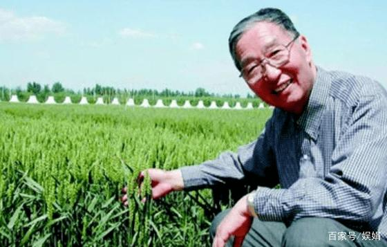
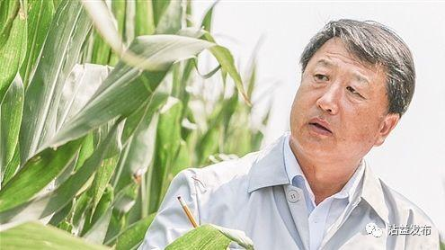

袁隆平，男，汉族，无党派人士，1930年9月生，江西德安人，国家杂交水稻工程技术研究中心、湖南杂交水稻研究中心原主任，湖南省政协原副主席，中国工程院院士，第五届全国人大代表，第六、七、八、九、十、十一、十二届全国政协委员。他一生致力于杂交水稻技术的研究、应用与推广，发明“三系法”籼型杂交水稻，成功研究出“两系法”杂交水稻，创建了超级杂交稻技术体系，为我国粮食安全、农业科学发展和世界粮食供给作出杰出贡献。荣获国家最高科学技术奖、国家科学技术进步奖特等奖和“改革先锋”等称号。
袁隆平是世界上第一位将水稻的杂交优势成功地应用于生产的科学家，几十年来致力于杂交水稻技术的研究、应用与推广，为我国粮食安全、农业科学发展和世界粮食供给作出了巨大贡献。
“你们年轻人没有经历过饥荒，不知道粮食的重要性，一粒粮食能够救一个国家，也可以绊倒一个国家。”袁隆平曾在采访里，提到自己研究水稻的初心。
“要想不受别人欺负，国家必须强大起来。”袁隆平从小就意识到了这一点，因此他始终将个人前途与国家利益紧紧相连。他有过体育救国的梦想，也曾打算参军报国，最终，他将自己对祖国的热忱，结成了一串串饱满的稻穗。
“我们国家人口多、耕地少，保障国家粮食安全，唯一的办法就是提高单产。因此高产对于我来说，是一个永恒的主题。”袁隆平说，新中国成立前，自己亲眼见到倒伏在路边的饿殍，这让他感到痛心。于是在1949年，他报考了西南农学院。
1956年，为了响应国家“科学发展规划”，之前还在学校代教俄语的袁隆平，带着学生们开始了农学实验。几年时间，完全靠自己摸索经验的袁隆平发现水稻中有一些杂交组合有优势，并认定这是提高水稻产量的重要途径。培育杂交水稻的念头，第一次浮现在他的脑海。为此，他两次自掏腰包，前往北京拜访育种学家鲍文奎。
1966年，袁隆平发表了论文《水稻的雄性不孕性》，这篇论文，拉开了中国杂交水稻研究的序幕。1970年，在海南发现的一株花粉败育野生稻，让杂交水稻研究打开了突破口。袁隆平给这株宝贝取名为“野败”。1973年，在第二次全国杂交水稻科研协作会上，袁隆平正式宣布籼型杂交水稻三系配套成功，水稻杂交优势利用研究取得了重大突破。
回忆起那段攻坚克难的日子，袁隆平记忆里最深刻的细节之一，是背着足够吃好几个月的腊肉，倒转好几天的火车，前往云南、海南和广东等地辗转研究，只为寻找合适的日照条件。袁隆平说，这样的经历“就像候鸟追着太阳”。
1996年，农业部正式立项超级稻育种计划。4年后，第一期每亩700公斤目标实现。随后便是2004年800公斤、2011年900公斤、2014年1000公斤的“三连跳”。
1979年4月，杂交水稻国际学术会议上，袁隆平宣读了自己的论文《中国杂交水稻育种》，中国第一次将杂交水稻研究的成功经验传递给世界
袁隆平著于1985年的《杂交水稻简明教程》，经联合国粮农组织出版后，发行到40多个国家，成为全世界杂交水稻研究和生产的指导用书。
因为“为保障世界粮食安全和解除贫困展示了广阔前景”，并“致力于将杂交水稻技术传授并应用到包括美国在内的世界几十个国家”，2004年，袁隆平获得了世界粮食奖。
“发展杂交水稻，造福世界人民，是我毕生的追求和梦想。”袁隆平说。
20多年来，他带领团队开展超级杂交稻攻关，分别于2000年、2004年、2011年、2014年实现了大面积示范每公顷10.5吨、12吨、13.5吨、15吨的目标。最新育成的第三代杂交稻叁优一号，2020年作双季晚稻种植平均亩产达911.7公斤，加上第二代杂交早稻亩产619.06公斤，全年亩产达1530.76公斤，实现了周年亩产稻谷3000斤的攻关目标。
“共和国勋章”颁奖词称，他为我国粮食安全、农业科学发展和世界粮食供给作出了巨大贡献。
2020年，由袁隆平“海水稻”团队和江苏省农业技术推广总站合作试验种植的耐盐水稻在江苏如东栟茶方凌垦区进行测产，经专家团队对3块各1亩左右稻田机收实测，“超优千号”耐盐水稻的平均亩产量达到802.9公斤，专家表示，这个产量创下盐碱地水稻高产新纪录。
袁隆平表示，“我的工作是非常有意义的工作，我觉得身体还可以，脑瓜子还没糊，所以说我还可以继续工作，我还可以鼓起勇气继续干下去，‘90后’一直搞到就是‘100后’。”
袁隆平毕生的梦想，就是消除饥饿。
李振声，男，汉族，1931年2月出生，中共党员。曾任中国科学院副院长、中国科协副主席等职。现任中国科学院遗传与发育生物学研究所研究员。中国科学院院士、第三世界科学院院士。在半个多世纪的科学生涯中，李振声主要从事小麦遗传与远缘杂交育种研究，同时开展农业发展战略研究。
李振声开创了小麦与偃麦草远缘杂交育种新领域并育成了“小偃”系列品种。20世纪50年代初，李振声系统搜集鉴定了800余种牧草，克服了远缘杂交不亲和、杂种不育和后代疯狂分离的三大困难，探索出一整套科学的远缘杂交育种程序。经过20多年的努力，成功地将偃麦草的染色体组、染色体、染色体片段导入小麦，育成了小偃麦八倍体、异附加系、异代换系、易位系以及小偃4号、5号、6号、小偃54和小偃81等高产、抗病、优质小麦品种。小偃6号表现最为突出，在陕西、山西、河南等10多个省份累计推广面积达1.5亿亩，增产40亿公斤，开创了小麦远缘杂交品种在生产上大面积推广的先例。小偃6号已成为我国小麦育种的重要骨干亲本，其衍生品种有50余个，累计推广面积3亿多亩。
李振声创建了蓝粒单体小麦和染色体工程育种新系统。他用远缘杂交获得的“小偃蓝粒”育成了以种子蓝色为遗传标记的蓝粒单体小麦和自花结实的缺体小麦系统。蓝粒单体解决了小麦染色体工程育种中获得和保存单缺体两大难题，并建立了快速选育小麦异代换系的新方法——缺体回交法，为小麦染色体工程育种开辟了一条新途径。这是一项原创性成果。
李振声开创了小麦磷、氮营养高效利用的育种新方向。20世纪90年代初，李振声提出了提高氮、磷吸收和利用效率的小麦育种新方向和资源节约农业发展观。通过对数千份资源的鉴定筛选，发现了一批“磷高效”和“氮高效”小麦种质资源，研究和揭示了其生理机制与遗传基础，培育出高效利用土壤氮、磷营养的优质小麦新品种小偃54。
李振声著有《小麦远缘杂交》等2部专著，主编论文集5卷，发表论文100多篇。为国家培养了一批人才。
李振声曾荣获全国科学大会奖、国家技术发明一等奖、陈嘉庚农业科学奖、何梁何利科技进步奖等重大奖项。荣获中华农业英才奖、全国劳动模范等荣誉称号。获2006年度国家最高科学技术奖。中共十二大、十三大代表，第八、九届全国政协常委。
自1972年担任村农科队队长开始，农民技术员李登海就走上了玉米育种和高产栽培研究之路。38年间，李登海始终身处科研一线，为了事业，他远离家乡、远离亲人，连续29个春节在海南搞加代育种。他凭着坚强的意志和超强的毅力，克服孤寂、高温、蚊叮虫咬和疾病煎熬，在农科队解散、科研条件简陋的困难条件下坚持潜心育种，矢志不移，取得了优异成绩。
李登海越过平展型玉米的模式障碍，提出了“紧凑株型+高配合力”的崭新玉米育种理论。1979年，他创造亩产776.6公斤的我国夏玉米单产最高记录。之后连续七次创造和刷新我国夏玉米高产纪录，并创亩产1402.86公斤的世界夏玉米高产纪录。他以一年3至4代的育种速度，选育出100多个紧凑型玉米杂交种。其中，51个通过国家级、省级审定，获得11项发明专利和43项植物新品种权。
李登海积极推动科技成果转化，每年都无偿将试验示范种子发送全国几百个科研单位。据不完全统计，全国由登海系列自交系或衍生系组培育成的玉米杂交种达到了200多个，至2008年在生产上推广面积已达12多亿亩，增产玉米1000多亿公斤，创经济效益1000多亿元。
李登海响应国家号召，积极参与西部大开发，先后在宁夏、新疆、甘肃、内蒙等地投资近亿元建立玉米生产基地和加工中心，带动当地农民致富和促进农民就业近四万户。他建设了玉米良种、蔬菜良种、小麦良种、花卉栽培等六大培训基地，广泛开展大规模科技培训，基地每年培训农村群众2万多人次，直接带动5万多农户增收。
李登海在杂交玉米方面作出的突出贡献，得到了社会各界的高度赞誉，人们称他为“中国紧凑型杂交玉米之父”，被种业界誉为“南袁（杂交水稻之父袁隆平）北李（登海）”。他获得亚洲农业研究发展基金奖、国家科学技术进步一等奖、中国发明创业奖特等奖、当代发明家等专业奖项。荣获全国新长征突击手、全国先进工作者、中国十大杰出青年、山东省道德模范等荣誉称号。他是党的十四大、十七大代表，第八、九、十届全国人大代表和第八、九届全国人大常务委员会委员。
